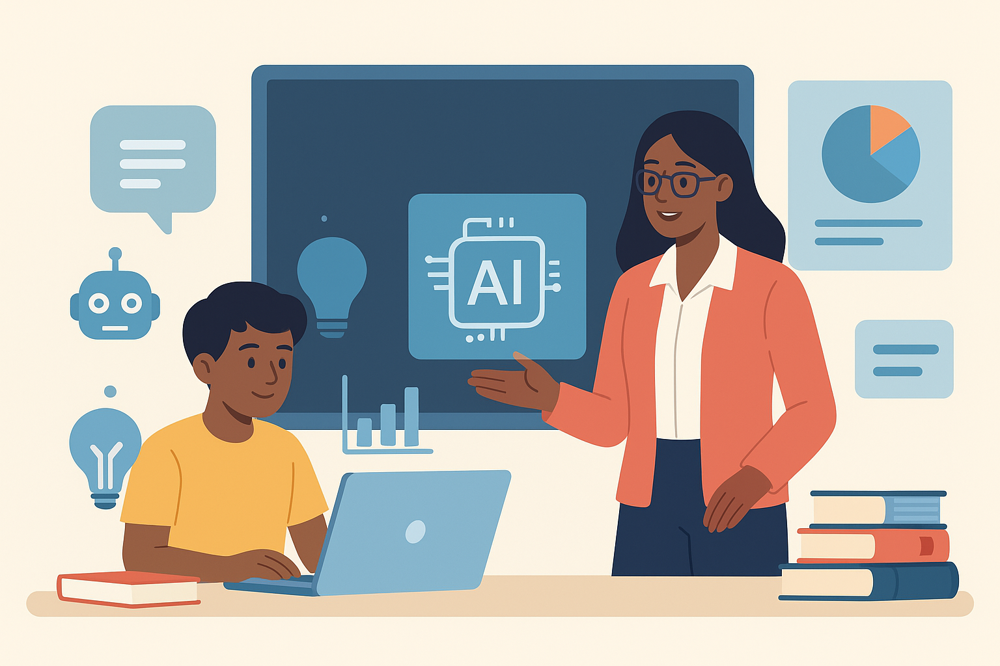
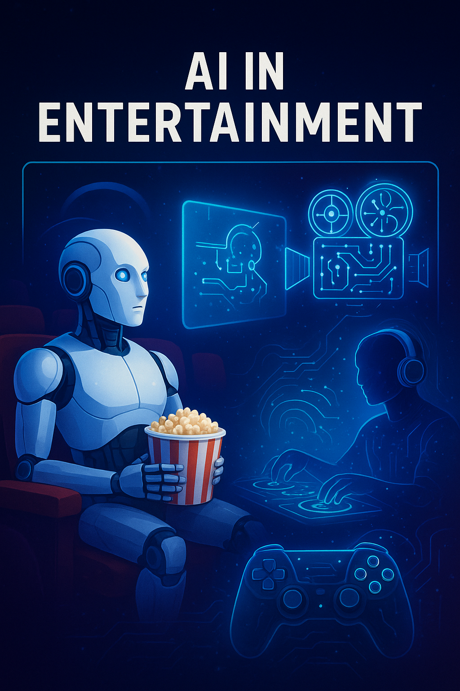

AI in action: Transforming the World Around Us
Applications of Artificial Intelligence
Artificial Intelligence (AI) is no longer just a futuristic concept - it is part of our daily lives and is reshaping industries across the globe. From recommending movies on Netflix to powering self-driving cars, AI has become an invisible assistant that helps people, businesses, and societies work smarter. AI applications can be seen in many areas. In healthcare, AI assists doctors in diagnosing diseases faster and more accurately. In education, it personalizes learning experiences for students. Businesses rely on AI to analyze data, improve decision-making, and enhance customer service through chatbots. Transportation is being transformed by autonomous vehicles and smart traffic systems, while entertainment and social media use AI to recommend content tailored to each individual. In short, AI is not limited to one field - it is everywhere, creating new opportunities and changing how we live, work, and interact with technology.
AI in Healthcare: Smarter, Faster, Healthier
Artificial Intelligence is transforming the healthcare industry by making medical services more efficient and accessible. With the help of AI-powered tools, doctors can diagnose diseases more accurately and at earlier stages, often detecting problems that humans might miss. AI algorithms are being used to read X-rays, CT scans, and MRIs with high precision, supporting medical experts in decision-making. In addition, AI chatbots and virtual assistants help patients by answering health-related questions, scheduling appointments, and providing basic medical guidance. Personalized treatment plans are also becoming possible, as AI analyzes a patient's history, genetics, and lifestyle to recommend tailored therapies. From speeding up drug discovery to supporting robotic surgeries, AI is revolutionizing how healthcare is delivered and improving patient outcomes worldwide.
AI in Education: Shaping the Future of Learning
Artificial Intelligence is transforming education by making learning more personalized, accessible, and efficient. With AI-driven platforms, students can have a more effective learning journey by receiving personalized recommendations based on their strengths and weaknesses. Automated grading systems, smart content creation, and data-driven insights can help teachers identify where students may need extra support. Providing accessibility for disabled learners is one of the most impactful contributions of AI. Speech recognition, text-to-speech tools, and AI-powered translators are breaking down barriers, making education more comprehensive than ever before. While AI cannot replace the creativity and empathy of human teachers, it serves as a powerful assistant in the classroom. By handling repetitive tasks, offering instant feedback, and enabling virtual tutoring, AI permits education to be focused on things that matter the most-nurturing critical thinking and creativity in their students. The future of education lies in a balanced approach, where AI pairs with human teachers to build a smarter, more inclusive, and engaging learning environment.
AI in Business: Driving Innovation and Efficiency
Artificial Intelligence is revolutionizing the business world by enabling smarter decisions, streamlined operations, and better customer experiences. From predictive analytics to chatbots and automation tools, AI is helping companies reduce costs while boosting productivity. One of the most powerful applications of AI in business is data-driven decision-making. AI systems can analyze massive amounts of information to forecast market trends, customer behavior, and financial risks. This allows businesses to act proactively rather than reactively. AI is also transforming customer service with chatbots and virtual assistants that provide 24/7 support. Personalized recommendations powered by machine learning improve customer satisfaction and drive sales growth Moreover, businesses are adopting AI-powered automation in logistics, manufacturing, and supply chain management, reducing human error and speeding up processes. By handling repetitive and time-consuming tasks, AI allows employees to focus on creativity, innovation, and strategy. The future of business belongs to organizations that embrace AI as a partner in growth-leveraging its speed and intelligence to stay competitive in a rapidly changing world.
AI in Entertainment:Redefining Creativity and Experiences
Artificial intelligence is revolutionizing the entertainment sector, from gaming and streaming services to movies and music. Artificial Intelligence is being used in filmmaking to help with scriptwriting, create realistic visual effects, and even create digital characters. AI-powered tools are now used by music producers and composers to create melodies, remix songs, and improve sound quality. AI algorithms on streaming services like Netflix and Spotify make tailored content recommendations based on users' viewing and listening preferences, which keeps viewers interested. AI in gaming produces more intelligent adversaries, lifelike settings, and gameplay that adapts to the preferences of the player. AI is even used by social media companies to create filters, improve video quality, and increase user interaction. AI is enhancing human creativity rather than replacing it, enabling producers to create more engaging, customized, and interactive entertainment
